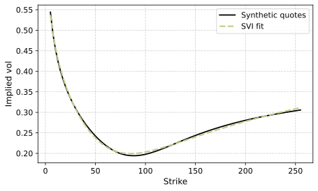
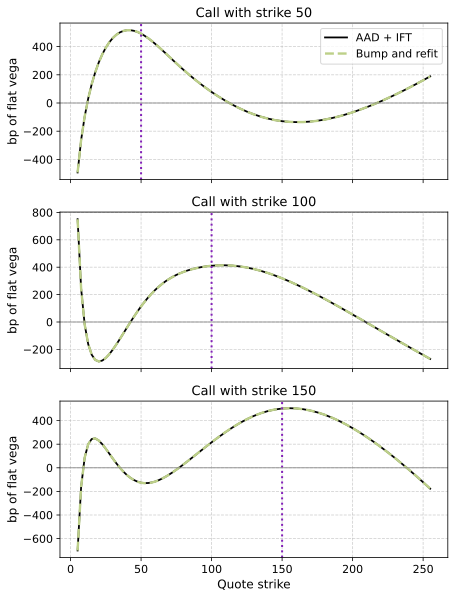
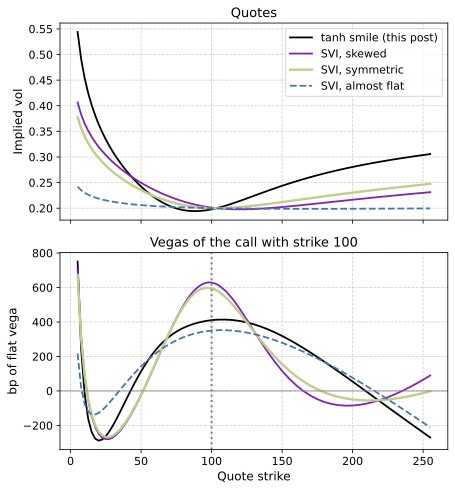
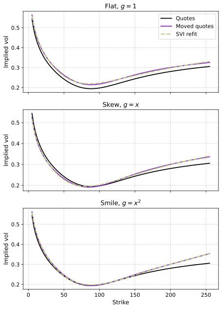
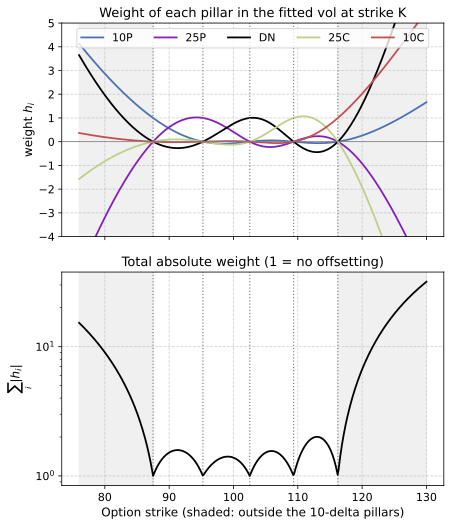
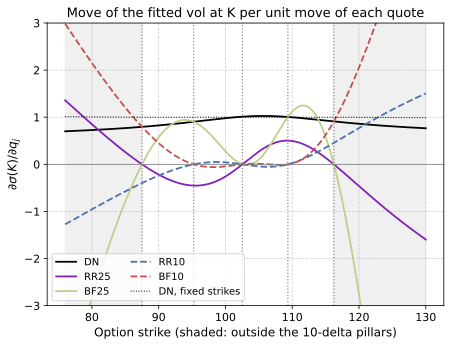

About 17 minutes to read (2,685 words)
We have already seen in the March post how
one can use AAD to compute derivatives with respect to model parameters.
However, when managing a position, model parameters are not what we are
interested in, but rather market inputs. In practice, a desk will calibrate
a model to market data, and is interested in exposure to these market parameters,
because these give hedging ratios that can be used to risk-manage the position.
In this post, I will explain how to differentiate through optimization,
in a sense to be made precise soon
[1, 2]1. Christianson, B. (1998), “Reverse accumulation and implicit functions,” Optimization Methods and Software, 9(4), 307–322.
2. Henrard, M. (2014), “Adjoint algorithmic differentiation: calibration and implicit function theorem,” Journal of Computational Finance, 17(4), 37–47..
Since the technical discussion does not require automatic differentiation at all, let us focus on the following situation. We have some input data $y$, such as a vector of implied volatility marks for a fixed set of strikes, all for the same maturity. A common way to produce a usable model is to solve for an optimal parameter vector $\theta(y)$, in the sense that $$ \theta(y) = \operatorname{argmin}_\theta F(y,\theta) $$ where $F(y,\theta)$ is some function, and we write $\theta^* = \theta(y)$. For us, a reasonable candidate is some least-squares expression of the form $$ F(y, \theta) = \sum_{i=1}^N (f(K_i,\theta) - \sigma_i)^2.$$ Our running assumption is that our pricer can output the price $V(\theta)$ easily, for example by feeding the parameters $\theta$ to some model; in particular, we can compute $\partial_\theta V$ using AAD. However, we are interested in $\partial_y V$, and the chain rule says that the only obstruction to this is computing $\partial_y \theta(y)$. But we are not interested in paying the price of running the optimization over and over to bump-and-reprice each risk!
There is, of course, no need to do this. Because $\theta(y)$ is an optimum
for $F$, we have that $\partial_\theta F(y, \theta(y)) = 0$ identically.
We can now compute $\partial_y$ of the left hand side, and obtain that
$$
\partial_y\partial_\theta F(y, \theta(y)) +
\partial_\theta^2 F(y, \theta(y))\partial_y \theta^* = 0,
$$
which is an implicit equation for $\partial_y \theta^*$. When $F$ is
expressed in terms of a least-squares expression, these two Hessian-like
terms can be written in terms of $f$: if we denote by $J$ the matrix
with entries $\partial_j f(K_i, \theta)$, then
$$ \frac 12 \partial_y\partial_\theta F = - J^\top \qquad
\frac 12 \partial_\theta^2 F = J^\top J + \sum_{i=1}^N r_i \partial_\theta^2 f(K_i, \theta) $$
where $r_i = f(K_i,\theta) - \sigma_i$ is the residual of the calibration,
and $\partial_\theta^2 f(K_i, \theta)$ a Hessian matrix. The conclusion is
that if $R = \sum_{i=1}^N r_i\,\partial_\theta^2 f(K_i,\theta)$ and $A = J^\top J + R$, then $v = \partial_y \theta^*$ solves $Av =
J^\top$. Since $\partial_y V = \partial_\theta V \cdot v$ we can get away
with computing $\partial_y V$ by solving $Au = \partial_\theta V^\top$
and then setting $(\partial_y V)^\top = Ju$. This needs $A$ to be invertible, which is the non-degeneracy condition of the implicit function theorem, and in practice also well conditioned. The parametrization we use below is
SVI [3, 4]3. Gatheral, J. (2006), The Volatility Surface: A Practitioner’s Guide, Wiley.
4. Gatheral, J. and Jacquier, A. (2014), “Arbitrage-free SVI volatility surfaces,” Quantitative Finance, 14(1), 59–71., which gives the total
implied variance $w = T\sigma^2$ at log-moneyness $z = \log(K/F)$, with
$F$ the forward, as
$$ f(K,\theta) = a + b\left(\rho(z-m) + \sqrt{(z-m)^2 + s^2}\right), \qquad \theta = (a, b, \rho, m, s).$$
It has nearly flat directions (for example, $a$ and $bs$ both shift the level near the money), and a large $\operatorname{cond}(A)$ amplifies small errors in $\partial_\theta V$ and in the Hessian, so it is worth checking.
Take a synthetic smile for a one-year expiry, quoted on 71 strikes between 5 and 255 with spot at 100, defined by the $f_4$ parametrization discovered in [5]5. Keller-Ressel, M. and Nikulski, H. (2026), Discovering parametrizations of implied volatility with symbolic regression, arXiv:2603.21892.: $$ \sigma(z) = 10\%\, \left(\tanh 2z - \frac 3{10}\right)\left(\frac 12 + z\right) + 21.5\%, \qquad z = \log(K/F(0,T)), $$ where $F(0,T) = S_0 e^{rT}$ is the forward, with $r = 3.5\%$. We fit an SVI slice to it by least squares. Since the quotes do not come from an SVI slice, the fit is not exact, which means we get some non-zero residuals. Note that when fitting market smiles, we usually use bounded optimization, but we need the minimum to be interior for the argument above to go through, as $\partial_\theta F$ need not vanish at a constrained optimum. The fit is shown in Figure 1.

Note that there is one small difference with the setup above. The SVI
parametrization is one of total implied variance $w = T\sigma^2$, not of
volatility, so the fit is done on the quotes $w_i = T\sigma_i^2$: in the
notation above, $f(K_i,\theta)$ is the SVI total variance at strike $K_i$,
and the data are the $w_i$ instead of the $\sigma_i$. The argument above
then gives us $\partial V/\partial w_i$, and we need one more use of the
chain rule to get vegas. Since $w_i$ depends only on $\sigma_i$,
$$ \frac{\partial V}{\partial \sigma_i} = \frac{\partial V}{\partial w_i}
\frac{d w_i}{d \sigma_i} = 2T\sigma_i\,\frac{\partial V}{\partial w_i}. $$
We use this in front of J @ u in the code below.
For calls struck at 50, 100 and 150, one solve with the matrix $A$ gives the full vector of market vegas $\dfrac{\partial V}{\partial\sigma_i}$, and we present these divided by the flat vega $$ V_{\text{flat}} = \sum_i \frac{\partial V}{\partial\sigma_i}, $$ expressed in basis points, so the three options are on the same scale. Figure 2 also shows the manual computation, bumping each quote and recalibrating, and we get the same answer, so the code works. Good news!

Why do the vegas look like this? The price of the call depends on $\theta$ only through the fitted total variance at its own log-moneyness $z^*$, that is $w^* = f(z^*,\theta) = T(\sigma^*)^2$, where $\sigma^*$ is the fitted volatility at the call’s strike, so $$\frac{\partial V}{\partial \theta} = \frac{\partial V}{\partial w^*}\, \lambda^*$$ with $\lambda^* = \frac{\partial f}{\partial \theta}(z^*,\theta)$. Putting this into the solution above, and writing $J_i$ for the $i$-th row of $J$, we get $$ \frac{\partial V}{\partial\sigma_i} = \frac{\partial V}{\partial w^*} \cdot 2T\sigma_i \cdot h_i, \qquad h_i = J_i A^{-1} \lambda^*. $$ The first factor is the same for every quote, so apart from $2T\sigma_i$ all the dependence on the quote is in the weights $h$. By construction $h_i = \partial w^*/\partial w_i$: it measures how much the fitted value at $z^*$ moves when the $i$-th quote moves, so $h$ is the weight function of the fit at $z^*$ (when $R = 0$, the equivalent kernel of the linear least-squares fit). A fit with five parameters cannot put all of its mass near $z^*$, and here the weights:
What does $h$ look like? Note that $h$ depends on the parametrization, the strike grid and the fitted $\theta$. Figure 3 compares it across four smiles.

Minimal example with Python. In code, the pricer records the call on a tape with the SVI parameters as leaves, back-propagates once to get $\theta$ Greeks, and then needs a single $5\times 5$ linear solve and a matrix–vector product.
# instrumented SVI parameters a, b, r, m, s = [tape.new_leaf(p) for p in svi.params] # Black-Scholes call with total variance from the SVI slice z0 = log(K / fwd) - m vvol = (a + b * (r * z0 + (z0 * z0 + s * s).sqrt())).sqrt() d1 = log(fwd / K) / vvol + vvol / 2 d2 = d1 - vvol pv = df * (fwd * d1.norm_cdf() - K * d2.norm_cdf()) tape.seed(); tape.backprop() dpv_dtheta = [x.adjoint for x in (a, b, r, m, s)] # implicit function theorem: A u = dV/dθ, vegas = J u J = jacobian_svi(zs, svi.params) # N x 5, helper code A = J.T @ J + residual_hessian(svi.residuals, zs, svi.params) # Hessian helper code u = np.linalg.solve(A, dpv_dtheta) vegas = 2 * T * sigma_quotes * (J @ u) # fit is in total variance T σ² # projections onto flat, skew and smile moves of the quotes x = (strikes - spot) / spot flat, skew, smile = np.sum(vegas), vegas @ x, vegas @ x**2
This vector is all we need to compute the risk to any move of the smile. If every quote moves by some amount $\varepsilon\, g(K_i)$, then to first order $$ \frac{dV}{d\varepsilon} = \sum_{i=1}^N \frac{\partial V}{\partial \sigma_i}\, g(K_i). $$ As an experiment, let us use the relative distance to spot $x(K) = (K - S_0)/S_0$ and consider:
Figure 4 shows what these markets look like.

The table compares the projection (IFT) with bumping the quotes by $\pm 10^{-4}\,g$ and recalibrating (Refit).
| Strike | Flat | Skew | Smile | Skew / Flat | |
|---|---|---|---|---|---|
| 50 | IFT | 0.2497 | −0.1258 | 0.0840 | −0.50 |
| Refit | 0.2497 | −0.1257 | 0.0840 | ||
| 100 | IFT | 37.9704 | −0.7205 | −5.7831 | −0.02 |
| Refit | 37.9795 | −0.7249 | −5.7920 | ||
| 150 | IFT | 14.5796 | 7.9951 | 5.5162 | 0.55 |
| Refit | 14.5770 | 7.9899 | 5.5174 |
The two agree to within 0.01 in every entry, and the remaining difference is the tolerance of the optimizer in the refits: with a tighter tolerance the flat vega at 100 comes out as 37.9703. At the money the flat vega is close to the Black–Scholes vega at the fitted volatility, equal to 38.43, but not equal to it. Note also that, in absolute terms, the at-the-money call has more skew risk than the 50 strike, but only because it has a hundred and fifty times more vega.
Why is the flat vega not the Black–Scholes vega? The weights $h$ explain the difference. The first column of $J$ consists of ones, and since $f$ is linear in $a$, the corresponding row of every Hessian $\partial_\theta^2 f(K_i,\theta)$ vanishes. Hence the weights $h_i$ add up to exactly one, for any residuals: moving every $w_i$ by the same amount moves $w^*$ by that amount. But moving every $\sigma_i$ by the same amount is not the same as moving every $w_i$ by the same amount. Since the Black–Scholes vega of the call is $$\frac{\partial V}{\partial\sigma^*} = 2T\sigma^* \frac{\partial V}{\partial w^*},$$ summing the formula for $\partial V/\partial\sigma_i$ over $i$ gives $$V_{\text{flat}} = \sum_{i=1}^N \frac{\sigma_i h_i }{\sigma^*}\cdot \frac{\partial V}{\partial \sigma^*}, $$ so the gap between the two vegas comes entirely from the factors $\sigma_i/\sigma^*$.
An obvious question is: why do these buckets produce so much risk for a call struck at $K$ away from that strike? Naively, one would expect that a call struck at $K$ has most if not all of its risk tight around the smile segment near $K$. But the figures above show that SVI moves a lot of the vega of a call to quotes far from its strike. For the call struck at 100, the absolute vegas on quotes struck more than 30 away from 100 add up to 98% of its flat vega. Is this a defect of SVI, or the price of any fit that stays smooth?
One way to see that it is the latter is to compare this with a non-parametric choice: fit a natural cubic spline in total variance through all 71 quotes. It reproduces every quote, so there is no optimization and no implicit function theorem, and the fitted volatility at a quoted strike is the quote itself. The call struck at 100 then has all of its vega on the quote at 100, and for a quoted strike the risk to any move $g$ is just the Black–Scholes vega times $g(K)$:
| Strike | Fit | Flat | Skew | Smile |
|---|---|---|---|---|
| 100 | SVI | 37.9704 | −0.7205 | −5.7831 |
| Spline | 38.4049 | 0 | 0 | |
| 150 | SVI | 14.5796 | 7.9951 | 5.5162 |
| Spline | 15.0080 | 7.5040 | 3.7520 |
The price of this is that the spline follows moves that the market should not make. Moving a single quote by 10bp of volatility and fitting again gives a slice with a negative density, while none of the SVI refits has a negative density. Of course, SVI does not rule out arbitrage in general, but here every slice obtained by refitting is free of arbitrage. The conclusion is that either the curve has enough freedom to follow single quotes, in which case its buckets are local but valid only for moves of a few basis points, or it is smooth enough to stay arbitrage-free, in which case the vega spreads.
So how can we understand SVI vegas? When $R = 0$, fitting again after the quotes move by $\Delta w$ changes the fitted values by $$ \Delta w_{\text{fit}} = J(J^\top J)^{-1}J^\top \Delta w, $$ the least-squares projection of $\Delta w$ onto the moves allowed by the SVI parametrization. The vegas are the risk to the projected move! A flat move is close to an SVI move, so the flat vega is almost the same for both fits: 37.97 against 38.40. A move of a single quote, or other parametrized moves, are not, and we must replace them by the closest SVI-allowed move, creating the spreading effect.


In FX, the smile of an expiry is not quoted on a grid of strikes, but by five numbers, each defined in terms of delta. For $n = 25$ or $10$, write $\sigma_{nC}$ for the implied volatility of the call whose delta is $n\%$, and $\sigma_{nP}$ for that of the put whose delta is $-n\%$; here we use forward deltas without premium adjustment. The quotes are the delta-neutral volatility $\sigma_{\rm{DN}}$, the risk reversals and the butterflies $$ \sigma_{{\rm RR}n} = \sigma_{nC} - \sigma_{nP}, \qquad \sigma_{{\rm BF}n} = \tfrac12\left(\sigma_{nC} + \sigma_{nP}\right) - \sigma_{\rm{DN}}. $$ Here we use the simple “smile strangle” convention for the butterfly; the butterfly that the market quotes is defined through a strangle priced with a single volatility, which adds one more step.
The DN quote is the implied volatility of the delta-neutral straddle, the straddle whose call and put deltas cancel. For our example we take one year, $\sigma_{\rm{DN}} = 10\%$, $\sigma_{\rm{RR}25} = -1.5\%$, $\sigma_{\rm{BF}25} = 0.35\%$, $\sigma_{\rm{RR}10} = -2.8\%$ and $\sigma_{\rm{BF}10} = 1.2\%$, with $F(0,T) = 102.02$. The pillars then go from 87.5 (10-delta put) to 116.2 (10-delta call), and the DN strike is 102.53.
Note that in the quote basis, with the pillar strikes held fixed, the DN bucket is the flat vega, because moving $\sigma_{\rm{DN}}$ moves every pillar volatility by the same amount; Figure 6 shows how this changes when the strikes move with delta. The risk reversals measure skew and the butterflies measure convexity, so the FX quotes are the flat, skew and smile moves used above, only defined in delta instead of strike.
Now we have five quotes and five SVI parameters, so the fit is exact, $J$ is square, and the projection above is the identity: $$ \Delta w_{\text{fit}} = J(J^\top J)^{-1}J^\top \Delta w = \Delta w. $$ Nothing is projected away. Every move of the quotes is a move of an SVI slice, and the vegas are the risks to the quote moves themselves. The weights become $h = J^{-\top}\lambda^*$, and $h_i(K)$ is the weight of pillar $i$ in the fitted variance at strike $K$: at a pillar it is one on that pillar and zero on the others. Figure 5 shows that these weights are local between the pillars, and not outside them.
In terms of the quotes, the 5-delta call (strike 121.1) has $-3.8$ times its flat vega on $\sigma_{\rm{BF}25}$ and $2.5$ times on $\sigma_{\rm{BF}10}$. These numbers describe the extrapolation rather than the option: they are what a curve with five parameters through five points implies outside them, and hedging them would hedge the model's wing, not the market's. So bucketed risks of options outside the quoted range should not be used. Either the wings are quoted, or their risk is handled separately.
The same weights can be read in terms of the quotes, in Figure 6. Inside the 10-delta range each quote has the shape suggested by its name: the DN quote is a level move, the risk reversals are skew moves and the butterflies are convexity moves, each zero at the pillars that do not impact them. With the pillar strikes held fixed, the risk reversals would be exactly $\pm\tfrac12$ at their pillars and the butterflies exactly one. With the strikes moving with delta, every quote's sensitivity at a pillar is scaled by the same factor, the value of the DN curve there.
We showed how to get AAD to pass through an optimization step, and how the bucketed Greeks can be used to understand reactions of call prices to market moves, that is, movements of the reference market parameters and their resulting impact on our model. Note that this also applies, mutatis mutandis, to e.g. forecasting and discount curves fitted to rates quotes (such as swaps). In terms of computational cost, AAD together with the implicit function theorem removes the need to recalibrate once per quote to get buckets. It also helps to interpret them: each bucketed risk depends on the calibration procedure as much as on the option.